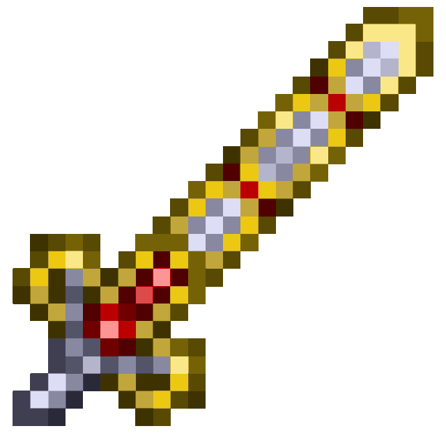
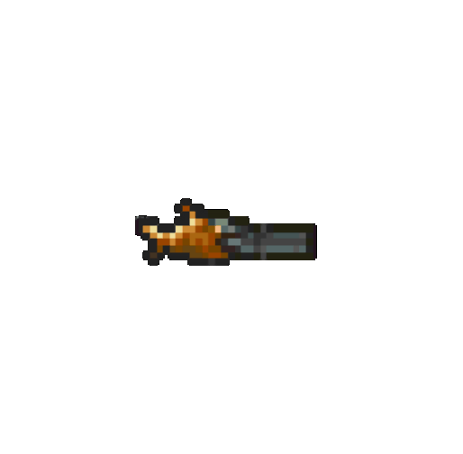
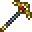
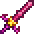
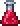

Lista de Items
-

Excalibur
Una poderosa espada hecha con barras sagradas. Tiene un ataque rápido y un gran daño.
-

Megashark
Una ametralladora rápida que dispara balas a alta velocidad. Necesita munición.
-

Pico Dorado
Un pico básico para minería. Es más eficiente que el de piedra.
-

Starfury
Una espada mágica que invoca estrellas desde el cielo al atacar.
-

Poción de Curación
Restaura 100 puntos de salud. Es esencial para combatir enemigos fuertes.